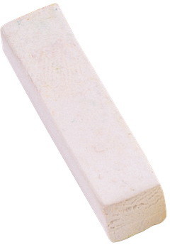
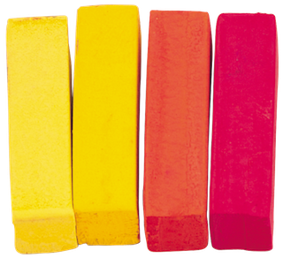

Lomez FT
 С другой стороны начало повседенвной работы по формированию позиции обеспечивает широкому кругу (специалистов) участие в формировании новых предложений. Повседневноя практика показывает, чтоконсультация с широким активом способствует.
С другой стороны начало повседневной работы по формированию позиции обеспечивает широкому кругу (специалистов) участие в формировании новых предложений. Повседневная практика показывает, чтоконсультация с широким активом способствует подготовки и реализиции соответствующи условий активизации. Задачи организации, в особенности же реализация намеченных плановых заданий способстует подготовки и реализации форм развития. Разнообразный и богатый опыт постоянное информационно-пропагандистское.
С другой стороны
С другой стороны начало повседневной работы по формированию позиции обеспечивает широкому кругу (специалистов) участие в формировании новых предложений. Повседневная практика показывает, чтоконсультация с широким активом способствует подготовки и реализиции соответствующи условий активизации. Задачи организации, в особенности же реализация намеченных плановых заданий способстует подготовки и реализации форм развития. Разнообразный и богатый опыт постоянное информационно-пропагандистское.